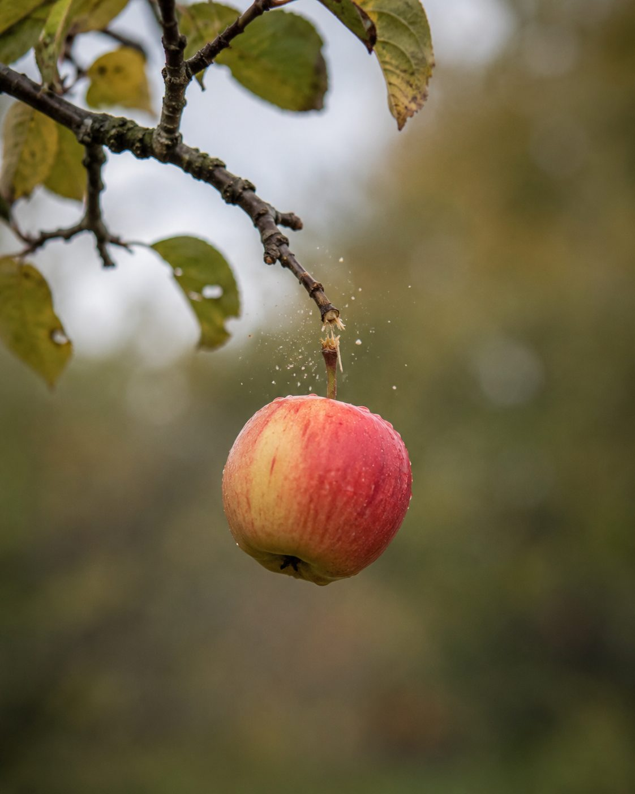
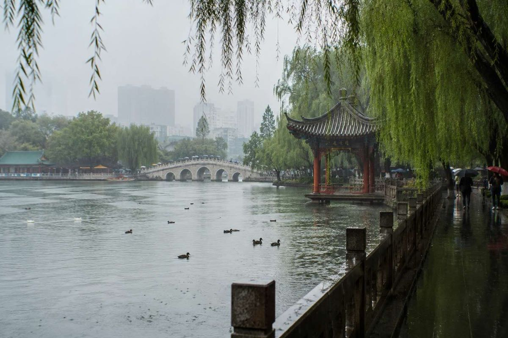
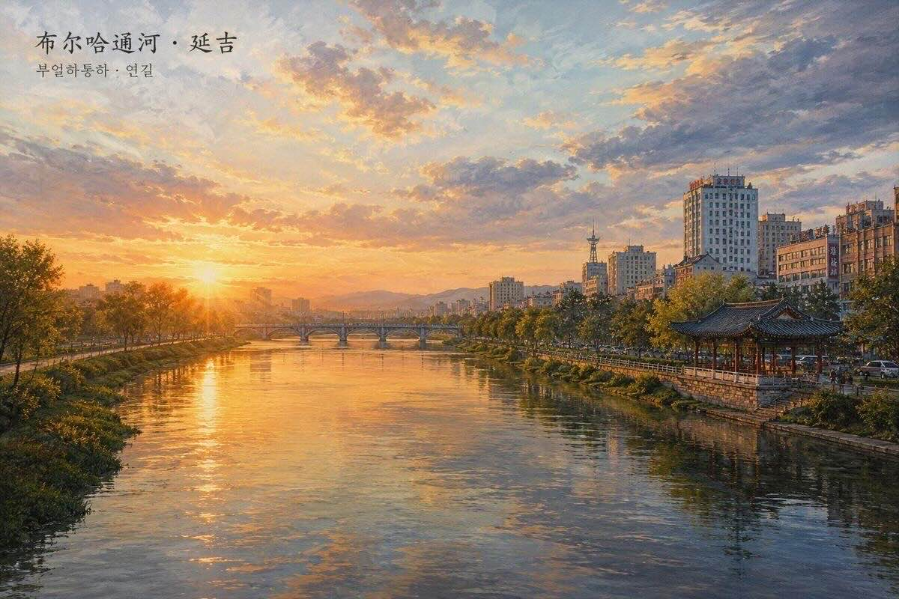
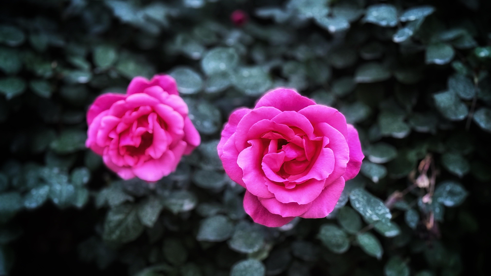

← 返回首页
🍵 人间烟火
如果火星日志记录的是想象中的远方，
那么地球日志，记录的就是脚下这片土地。
没有红色荒原，没有无声的风，
只有市场里的吆喝、厨房里的烟火、
窗台上晒着的衣服，还有楼下传来的饭菜香。
这是《地球日志》：
关于柴米油盐、街角巷尾、平凡日子里的小小温度。
🌇 地球日志
2026年7月20日
白鹭的世界
清晨五点，天还浸在青灰色的水里，白鹭已经醒了。
它们的世界从一片薄雾开始。芦苇荡是它们的城邦，浅滩是它们的街道，天空则是它们随时可以展开的屋顶。你站在远处看，会以为那是一群被风遗落的白色花瓣——直到某一只忽然振翅，你才惊觉，那是活的，是有骨有血的生灵。
一、水边的哲学家
白鹭走路的样子，像在思考一件极其重要的事情。
它们把细长的腿从水里缓缓拔出，又缓缓插入，每一步都经过精确的丈量。脖子缩成一道优雅的 S 形，眼睛盯着水面，一眨不眨。那神情不像在觅食，更像在参禅——水里有它的宇宙，有它的前世今生。
有时候，它会把喙伸进水里，快得像一道闪电，再抬头时，一条银光闪闪的小鱼已经在嘴里挣扎。但它不急着吞咽，它会停一停，仿佛在感谢这条鱼的牺牲，然后才仰起头，让食物顺着喉咙滑下去。
吃完，它继续走。水波从它的脚边荡开，一圈一圈，把晨光揉碎成金子。
二、飞行的诗
白鹭飞起来的时候，整个世界都安静了。
它们的翅膀很大，展开时像两片被月光洗过的云。但飞得并不快，甚至可以说是慢的——慢到你能看清每一根羽毛的颤动，慢到你觉得时间也跟着一起滑翔。
它们很少扇动翅膀，更多的时候借着气流滑翔，仿佛天空是一条无声的河流，而它们只是顺流而下的一片叶子。
最动人的是它们的编队。三只、五只，有时候是十几只，排成一条歪歪扭扭的线，从芦苇荡的尽头升起，掠过稻田，掠过村庄，最后消失在山的背后。你不知道它们要去哪里，但你知道，它们一定会回来。
因为这里，是它们的世界。
三、黄昏的仪式
日落时分，白鹭的世界进入最神圣的时刻。
它们从四面八方归来，像下班的人潮，却又不慌不忙。有的停在树梢，把脖子蜷进翅膀里，变成一个毛茸茸的白球；有的站在浅滩上，一动不动，任由晚霞把它们的影子拉得很长很长；还有的成双成对，脖子交缠在一起，像是在交换什么秘密。
如果这时候屏住呼吸，你会听到一种极轻的声音——不是鸣叫，而是羽毛轻轻摩擦羽毛的沙沙声。那是它们在整理羽翼，在清点一天的收获，也是在为即将到来的黑夜做准备。
天完全黑下来的时候，白鹭的世界也暗了。但你知道，它们并没有真正睡去。它们只是闭上眼睛，把整个世界收进翅膀里，等待下一次黎明。
四、人与白鹭
小时候，我一直以为白鹭是仙女的化身。
它们太白了，白得不像人间的颜色；它们太静了，静得不像有烦恼的生灵。我常常幻想，如果自己能变成一只白鹭，是不是就能远离尘世喧嚣，只守着一片水、一方天、一轮日出日落。
后来才明白，白鹭的世界并非没有风雨。台风会掀翻它们的巢，寒冬会冻结浅滩，也会让它们忍受饥饿；更有那些藏在暗处的枪口，瞄准它们毫无防备的洁白。
然而，它们依然在那里。一年又一年，一代又一代，守着那片湿地，也守着那个属于它们的世界。
尾声
去年秋天，我又回到了那片芦苇荡。
白鹭少了许多。开发商在不远处建起高楼，挖掘机日夜轰鸣，把泥土和湖水搅成浑浊的颜色。我站在曾经站过的地方，等了很久，只看到三只白鹭，孤零零地立在远处的浅滩。
它们还在走，还在飞，还在思考。但它们的背影，在灰蒙蒙的天空下，显得那么小，那么单薄。
我忽然想起小时候的那个自己。那时我以为，白鹭的世界是永恒的——有永远的水，永远的天，永远的日出日落。
如今才明白，没有什么世界是真正永恒的，除了我们愿意为之守护的那一颗初心。
白鹭还在。
只要还有一片浅滩，
还有一寸干净的水，
还有一个人愿意站在远处，
静静地看它们走路、飞翔、沉思——
它们的世界，就还在。
愿每一只白鹭，都能找到回家的路。
2026年7月12日
无人机和白鹭
黄昏的滇池荷塘边，一只白鹭静静站在浅水里。风很轻，荷叶微微起伏，它像一位耐心的垂钓者，把整个傍晚都站成了一幅画。
忽然，一架无人机缓缓飞来，在它头顶约两米高的地方悬停。我原以为，白鹭会像平日见到人举起手机时那样，立刻振翅飞远。可出乎意料的是，它只是抬头看了一眼，又继续望向水面，仿佛那架机器只是天空中多了一片会发出嗡鸣的云。
这一幕让我想了很久。
也许，对白鹭来说，它判断危险并不是依据对象是什么，而是依据对方是否带着攻击和逼近的意图。人类常常以为自己离自然越来越近，可很多时候，我们只是带着自己的好奇不断闯入它们的世界。真正让动物放下警惕的，未必是科技，而是克制；不是镜头，而是尊重。
人与自然的和谐，从来不是彼此靠得越来越近，而是学会保持恰到好处的距离。那段距离里，有信任，也有自由。
夕阳渐渐落下，无人机缓缓升高离去，白鹭依旧站在那里，荷塘恢复了最初的宁静。那一刻，我忽然觉得，人与自然最好的相遇，不是惊扰，而是彼此允许对方，安静地生活在同一片天空下。
2026年7月10日
苹果

人们总喜欢把牛顿的故事讲得很传奇：一个苹果掉下来，世界便有了万有引力。
其实，更接近历史的版本是，苹果并没有砸中他的头，而是落在他的眼前。他真正做的，不是被苹果“启发”，而是停下来问了一句：
“为什么它总是向下？”
那个看似普通的问题，最终改变了人类理解世界的方式。
今天的我们，每天也会遇见无数个“苹果”。
手机亮起的一条消息，路边飘落的一片树叶，咖啡馆里一句陌生人的问候，旅途中一场突然而至的雨……它们大多悄悄经过我们的生活，没有留下痕迹。
真正改变人生的，往往不是那个苹果，而是有没有停下来，认真地看它一眼，认真地想它一下。
牛顿发现了万有引力，而普通人的生活，也有属于自己的“引力”。它把远方拉向脚下，把回忆拉向今天，也把一个个平凡的日子，慢慢拉成一生。
—— 漫游的梦想家 · 地球日志
厄尔尼诺
2026.07.09
新闻里，又出现了熟悉的词——厄尔尼诺。
有人说，今年太热；有人说，暴雨越来越猛；还有人说，干旱、山火、洪水仿佛约好了一样，同时出现在地球不同的角落。
于是，人们总喜欢问：地球到底怎么了？
如果站在太空回望，这颗蓝色星球其实一直都在呼吸。
海洋有冷热交替，大气有风云流转，火山会喷发，冰川会消融。厄尔尼诺只是地球漫长生命中的一次脉搏，它提醒我们：自然从来不是静止的。
真正值得思考的，也许不是厄尔尼诺本身。
当天空因为温室气体储存了更多热量，当森林不断减少，当湿地被填平，当河流被截断，当城市越来越像一块块吸热的钢铁，我们也许正在放大每一次自然波动，让一次普通的气候事件，演变成一场场极端灾害。
灾难，从来不是单独发生的。
它常常是自然的变化，与人类的选择，在同一个时代相遇。
也许，地球并没有向人类发怒。
它只是按照自己的规律运转，而我们必须学会按照自然的规律生活。
如果未来还有更多厄尔尼诺、更多拉尼娜、更多高温与暴雨，我希望人类记住的，不只是每一次创纪录的数字，而是学会敬畏海洋、森林、河流和空气。
我们并不是地球的主人，只是这一段漫长地质年代里，短暂停留的旅人。
昆明续雨
2026.07.08
午后的昆明，又落了一场雨。没有暴烈的雷声，也没有急促的风，只是细细密密地洒向屋檐、树梢和远处的西山。雨中的春城仿佛放慢了脚步，街上的行人撑起各色雨伞，空气里弥漫着泥土与草木的清香。
今天，也是我第一次让 Codex 读懂了自己的网站。从创作，到整理，再到交给 AI 维护，像给这座慢慢生长的数字图书馆找到了一位新管理员。
窗外的雨还在下，屏幕里的页面静静翻开。我知道，每一次更新，都是一次新的远行；而每一场昆明的雨，都会在这本《地球日志》里留下温柔的一页。
昆明雨
2026.07.04
昆明，别号春城。几十年来，几乎每年都来一两趟。算下来，和这个城市的缘分不浅，和云南的缘分很深。
写昆明的雨，绕不开汪曾祺先生那篇名文。他写的是四十年代的昆明雨，写菌子，写缅桂花，写得馋人。我不敢续貂，只想写写我自己遇见的雨。
昆明的雨有个好脾气。不像北方的雨，憋了半年，一来就气势汹汹，电闪雷鸣，仿佛要跟大地算一笔总账。昆明的雨是商量着来的。天先阴下来，云压得低低的，风里有了湿意，然后雨就落下来了，不急不躁，落一阵，停一阵，太阳还会从云缝里探个头。当地朋友说，这叫"东边日出西边雨"。我说，这叫有分寸。
雨季里最好的去处是翠湖边。雨点落在湖面上，一圈一圈，一圈一圈，永远数不清。柳条被洗得发亮。有一年我在湖边的檐下躲雨，旁边一位老人也在躲，我们谁也没说话，就那么站着看雨。雨停了，他走了，我也走了。萍水相逢，连一句话的缘分都没有，可我至今记得那个下午。

翠湖
有一回在圆通寺，也遇上雨。雨打在大殿的瓦上，声音很密，殿里反而更静了。香客不多，佛前的灯一动不动。我忽然想，这雨落了千百年了。寺是唐朝的寺，雨也是唐朝的雨。来来去去的是看雨的人。
几十年来，昆明变了很多。老街拆了，高楼起来了，翠湖边的茶馆换了一茬又一茬。只有雨没变。它还是那样，商量着来，有分寸地下，落在新城，也落在旧梦上。
人说春城无处不飞花。我倒觉得，春城无处不是雨——温润的，绵长的，细水长流的雨。像一段几十年的缘分，不浓烈，但一直都在。
—— 漫游的梦想家
LiYang Music
两条河
2026.07.03

布尔哈通河
我的故乡有两条河。一条叫海兰江，一条叫布尔哈通河。小时候不觉得这有什么特别，天下的孩子，谁的家门口没有一条河呢。要到很多年以后才明白，有两条河的人，是被水包围着长大的。
海兰江在南，水色偏青，江边多稻田。夏天最热的时候，稻子正绿，风从江面上过来，先是凉的，到了田里就带上一股青苗的气味。布尔哈通河在城边上，水浅，河床宽，枯水的季节露出大片的鹅卵石，孩子们在石头缝里翻小鱼，翻到太阳落山，手指头泡得发白。
两条河最后在城东汇成一条，继续往东流。小时候我不知道它流到哪里去，也没想过要知道。河就是河，它一直在那里，像帽儿山一直在那里，像天一直在那里。
离开家乡那年我十几岁。此后四十多年，我到过很多有河的地方。长江、湄南河、鸭绿江、多瑙河，一条比一条有名。站在那些河边的时候，我常常想起家门口那两条无名的水流。它们太小了，小到地图上要仔细找才找得到；可是在我的记忆里，它们比所有的大江大河都宽。
前些年读经，读到"如河驶流，往而不返"。当时心里一动。原来两千多年前的人，看河看到的也是这个。水面上什么都没有留下，可是水一直在流。我们说"逝者如斯"，说的不是伤感，是一个事实：河从来不为谁停留，也从来不曾中断。
四十年里，我没有回去看过那两条河。有时候想，河大概变了，河岸修了堤，石头滩没有了，翻小鱼的孩子也换了好几茬。可是转念一想，河其实没变——变的只是水。此刻从帽儿山下流过的，早已不是我童年的那一江水了；然而河还叫那个名字，还往东流，还在每一个夏天的傍晚，把凉风送进稻田。
这样想的时候，心里反倒安静了。人和河大约是一样的。身体里的水换了一遍又一遍，记忆里的人来了又走，可是那条河道还在，方向还在。细水长流，流的不是同一股水，流的是那个"流"字本身。
我的两条河，此刻还在故乡的夜色里流着。我在几千里之外，写下这一页日志，算是隔着四十年的光阴，往水面上投了一颗小石子。
听不见响声。但我知道，水纹总会有的。
—— 漫游的梦想家
LiYang Music
忽梦峨眉山
2026.06.29
梦里的时间，是二十年前的一个冬天。那一年，我在川北南充工作了一年。
其间曾去过一趟峨眉山。小齐开车，晓林同行。一路向上，山色渐深。
半山腰忽遇大雪，只得租来军大衣继续前行。寒意虽重，却空气清透，直入肺腑。
途中不时遇见猴群拦路，似在迎客，也似讨食。人与山兽，在雪雾中短暂相望。
登至金顶，风雪正盛。雪中的峨眉金顶，如同另一重世界，清冷而壮阔。
那时腿力尚好，登山如常事，沿途多见奇景，不觉艰辛。
而近日再登京郊丫髻山，不过三百余米，却已气喘汗出。一上一下之间，时光与身体都悄然改写。
山水仍在对望，人已不同。无憾，也无叹。
—— 漫游的梦想家
LiYang Music
烟茶与二声部
2026.06.26
朋友转来一篇短文，是晚生纪念老师的文字。打开一看，纪念的人，是我多年的老友。我一直以老邵称之，直到他离开这个世界。
"一见如故"这个成语，生活里常被用作客套。可细想，它自有它的道理。相识数十年的人不少，为何大多形同路人？真正的相知，不是时间堆出来的，是某种东西在最初就已认出彼此。
与老邵相识，是九十年代末的事。他在南京前线话剧团工作，机缘让我们的日子彼此重叠。工作是辛苦的，也是枯燥的，偶尔有些快乐。友情在那些平淡的间隙里生长，慢慢沉淀，就成了老朋友——老了还能往来惦念的人。
他荣誉加身的日子不算少，也曾为此自得，我作为老友，替他高兴。只是荣誉这东西容易让人上瘾，跑得太快会忘了加油。老邵不幸中招，身体出了问题。原本在上海医治，最后时刻，他决定回金华故里。
和他最后一次通话，他还在张罗去青岛参加一个活动。那个活动，永远成了遗憾。他离开世界时，我在东北，守着临终的母亲，无法脱身南下送他最后一程。
总感觉他还在某处，挑灯写作，烟不离手，茶不离手，笑眯眯地看着自己的文字，像在看自己可爱的孩子。
他爱唱"黛玉葬花"。每次唱起，我会故意捂上耳朵，笑他悲情。但唱起"红河谷"，我们的二声部配合默契，很投入，像去远方，找到了迷人的风景。
我常常会想起他。想起那段不曾远去的岁月，和他——一根烟，一杯茶，一张笑眯眯的脸。
— 漫游的梦想家
LiYang Music
海鸥和足球
2026.06.22
美洲世界杯正在进行。今天偶然看到一段视频，地点似乎是在土耳其的一座足球场。一场比赛踢得正激烈，一只海鸥却悠然地从远处飞来，在球场上空自由滑翔，仿佛只是路过人类的热闹。这时，一方守门员大脚开球。足球带着力量飞向前场，不偏不倚，竟然击中了那只海鸥。海鸥瞬间失去平衡，从空中坠落下来。令人意外的是，双方球员几乎同时停下了比赛。没有人继续追球，所有目光都投向了草地上的小生命。一名球员快步跑到海鸥身边，小心地将它托起，尝试为它做人工呼吸。时间仿佛慢了下来。大约三五分钟后，原本两脚朝天、一动不动的海鸥终于有了些反应。翅膀轻轻颤动，脑袋也慢慢抬了起来。球员们松了一口气。随后，那名球员像护送受伤的队友一样，小心翼翼地将海鸥抱到场边，交给工作人员照顾。足球场上的胜负暂时被放在了一边。隔着屏幕，我也被这一幕深深打动。对于土耳其这个从未到访过的国度，忽然生出几分好感。一个国家真正动人的地方，或许并不只是古老的建筑、壮丽的风景或辉煌的历史，而是普通人在面对一个弱小生命时流露出的善意与怜悯。那一刻，球场上没有对手，没有比分，只有一群人共同守护着一只意外坠落的海鸥。这样的国家，这样的国民，让人心生敬意。
—— 漫游的梦想家
LiYang Music
茶与咖啡
2026.06.21
茶与咖啡，一片叶子与一粒果实，在时间的两岸相望。茶从枝头落入水中，慢慢舒展，把一生的青涩与清香交给温热；咖啡从异域的树上采下，经火焰与研磨，把苦与香一起压缩成醒来的瞬间。一个向内沉静，一个向外燃烧。谁羡慕谁？也许并不需要比较，只是生长的路径不同。风经过时，它们在杯中短暂相遇：一边是东方的回甘，一边是西方的余韵。人坐在中间，端起又放下，才明白所谓风味，不过是时间换了一种表达方式。
—— 漫游的梦想家
LiYang Music
地球日志 No.1｜月季年年开
2026.06.21

院子里的月季又开了。
去年开时，我在北京看春风；前年开时，也是在北京，看长街上的杨柳一点点返青。花倒是不记事，只管沿着自己的时辰，一年一年把枝头点亮。
今晨路过，见几朵新花挨着晨光，红得安静，粉得从容。忽然觉得，人生许多事情并不需要急着追问答案。像月季一样，认真长叶，认真扎根，到了季节，自会开花。
这些年走过不少地方，见过许多风景。回头再看，最难忘的却是晾台上那一排各色月季。红的、粉的、黄的、白的，挨着四季的风雨，也挨着寻常日子的烟火。它们不声不响地开着，替岁月记下一个又一个春天。
月季年年开，而我也还在这里。
—— 漫游的梦想家
LiYang Music